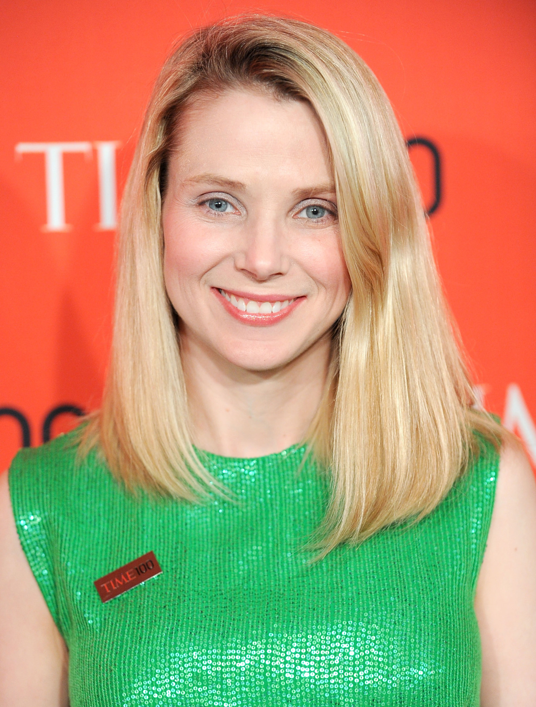

Cultura Le 11 donne più potenti e importanti in ITC
Julie Larson-Green
CEO di Microsoft

Julie Larson-Green (1962, Washington – Stati Uniti).
È arrivata in Microsoft, nel 1993, ma la sua passione per i computer risaliva a ben prima (a quando non aveva ancora avuto modo di usarne uno). È stata una studentessa molto appassionata – ai tempi del college prediligeva soprattutto le materie matematiche – e alla fine degli anni 80 si è laureata in business administration alla Western Washington University. Terminati gli studi, ha lavorato presso il supporto tecnico di Aldus, software house produttrice della soluzione di desktop publishing PageMaker (poi acquisita da Adobe), si è avvicinata al mondo della programmazione ed è diventata developper leader (sviluppatore capo) dell’azienda. Sei anni dopo, l’evento cruciale: l’entrata in Microsoft come program manager per Visual C++. L’ingresso nella società di Redmond ha consentito alla Larson-Green di rendersi conto delle sue attitudini nella progettazione software. Si è dunque specializzata nell’User experience design ed ha lavorato in importanti progetti, quali Internet Explorer 3.0 e 4.0 e la suite Office che ha curato dalla versione XP alla 2007: è in buona parte suo il merito dell’introduzione e della propagazione in ambiente Windows dell’interfaccia Ribbon. Successivamente ha infatti assunto il ruolo di Corporate Vice President per la Windows Experience portando nel mondo Windows tutto il bagaglio di esperienze maturato nella progettazione delle ultime release di Office. Dal 2005 è diventata uno dei volti pubblici di Microsoft. Inizialmente ha partecipato alle presentazioni legate al mondo Office, ora invece è colei che durante i keynote mette in evidenza l’aspetto end-user dei prodotti sfornati dal colosso di Redmond. Il suo approccio con i dipendenti è opposto rispetto a quello di Sinofsky: cerca sempre di “fare squadra”, di essere parte del team, e non di mettere l’uno contro l’altro i suoi collaboratori. Secondo molti (Steve Ballmer compreso – ex CEO Microsoft) è la persona giusta per portare a compimento il processo di unione fra Windows e Windows Phone con successo e senza creare tensioni all’interno dell’azienda. Ma come al solito sarà il mercato a dire l’ultima parola sul suo operato.
Marissa Mayer
CEO di Yahoo!
Marissa Mayer (30 maggio 1975, Wisconsin – Stati Uniti).
Dopo essere stata la prima donna ingegnere assunta da Google, e una dei primi 20 impiegati della compagnia (successivamente vice-presidente) dalla quale era stata assunta dal giugno 1999, riveste attualmente il ruolo di amministratrice delegata di Yahoo. Dopo il diploma ha frequentato il National Youth Science Camp in West Virginia. Ha ottenuto una laurea con lode in sistemi simbolici e una specializzazione in informatica alla Stanford University. In entrambi i corsi ha focalizzato la sua attenzione sul campo dell’intelligenza artificiale. Nel 2009 le è stata conferita una laurea honoris causa dall’Illinois Institute of Technology. È indubbiamente la donna più in vista nel mondo digitale. Sta facendo molto prendendo decisioni forti: ha eliminato il lavoro da casa, bollandolo come poco produttivo; ha rivoluzionato il servizio più importante di Yahoo, ovvero la mail; ha stretto un’alleanza strategica con Apple. Viene criticata e amata, ma indubbiamente con lei Yahoo è tornata al centro del mercato. Viene considerata dalla rivista Fortune una delle 50 donne più potenti, ed è stata la più giovane a entrare in questa classifica. I suoi contributi comprendono, tra gli altri, Google Maps, Google Earth, iGoogle.
Meg Whitman
Presidente e CEO di HP
Meg Whitman (4 agosto 1956, New York – Stati Uniti).
È nata Long Island, New York, e si laureata alla Princeton University e poi alla Harvard Business School. È stata uno dei dirigenti della The Walt Disney Company negli anni ‘80 per poi passare alla DreamWorks. La Whitman è stata anche presidente e Ceo di eBay per 10 anni: dal 1998 al 2008 (“anni d’oro” del portale che ha visto lievitare il suo fatturato passando da 4 milioni a 8 miliardi). È una delle persone più ricche della California e si era anche candidata alla poltrona di governatore per i repubblicani, perdendo poi le elezioni. Oggi dirige una delle più importanti società del mondo IT alle prese con molte sfide aperte dall’era post-pc.
Virginia M. Rometty
Presidente e CEO di IBM

Virginia “Ginni” M. Rometty (29 luglio 1957, Chicago – Stati Uniti).
La prima donna a capo di IBM e ricopre questa posizione dal 1° gennaio 2012, dopo aver lavorato per 31 anni in IBM. Prima di essere nominata amministratore delegato, la Rometty ha ricoperto le posizioni di Senior Vice President e Group Executive vendita, marketing e strategia per IBM. La rivista Fortune l’ha classificata tra le 10 donne in carriera più influenti al mondo per sette anni consecutivi, posizionandola al settimo posto nel 2011. Guida una delle aziende simbolo nel mondo tecnologico.
Alisa Chumachenko
Fondatrice e CEO di Game Insight International

Alisa Chumachenko (Lituania).
È la regina dei videogame social. Ha fondato la sua azienda a Mosca nel 2010 e da allora ha inanellato una serie di successi nel mondo del gaming mobile per iOS e Android e anche sui social. In particolare Game Insight International è tra i leader nei giochi gratuiti, il più famoso è Paradise Island, ma sono più di 30 i free-to-paly attualmente nel portfolio. In pochi anni Alisa ha costruito un piccolo impero con 400 dipendenti, partendo dalla Russia e non dalla Silicon Valley. Ha studiato alla Russian Academy of Theatre Art.
Cher Wang
Co-fondatrice e Presidente di HTC

Cher Wang (14 settembre 1958, Taipei – Taiwan).
Soprannominata “l’orgoglio di Taiwan” Cher Wang non solo ha fondato HTC ma anche Via tecnologies (che produce chip). È stata l’artefice dell’internazionalizzazione di HTC che ha portato la società a diventare uno dei partner fondamentali per Goggle e Microsoft. Nel 2012 ha ottenuto la posizione 56 nella “Top 100 Women” di Forbes. Cher Wang non è solo un’imprenditrice di successo, ma anche una filantropa. È rimasta nella storia la sua donazione da 28,1 milioni di dollari a favore del Guizhou Forerunner College, una scuola nel sud della Cina realizzata da Via Technologies.
Ursula Burns
CEO e Presidente di Xerox

Ursula M. Burns (20 settembre 1958, New York – Stati Uniti).
E' entrata in Xerox con una internship nel 1980. Nel 1981 è stata confermata. Lei, figlia di immigrati panamensi, ha stabilito vari record ed è stata la prima donna afroamericana ad entrare nella classifica di Fortune 500. È diventata Ceo di Xerox nel 2009 e ha dovuto affrontare un profondo cambiamento e una dolorosa ristrutturazione della società. È stata l’artefice della più grande acquisizione mai effettuata da Xerox: quella di Affiliated Computer Services valsa 6,4 miliardi di dollari.
Caterina Fake
Fondatrice di Flickr e Hunch

Caterina Fake (1969 or 1970, Pittsburgh – Stati Uniti).
È considerata (insieme al marito) una delle personalità che hanno creato il Web 2.0 con il lancio di Flickr, il sito che in brevissimo tempo è diventato il primo servizio di photosharing al mondo, acquisto nel 2005 (ad appena un anno dal lancio) da Yahoo. Ma Caterina (padre americano e madre filippina) non si è fermata e ha fondato Hunch un sito che misura i “gusti di internet” monitorando l’attività di ogni utente in relazione a particolari entità. Anche questo sito è stato acquisito da uno dei grandi del Web: eBay.
Jade Raymond
General Manager Ubisoft di Toronto

Jade Raymond (28 agosto 1975, Montréal – Canada).
Laureata in Computer Science è diventa famosa come inviata speciale dell’emittente G4 e soprattutto per essere stata la producer di “Assansin’s Creed”. È una programmatrice e il suo primo lavoro è stato alla Sony dove ha collaborato alla realizzazione di Jeoaprdy e Trivial Pursuit. È considerata la più bella dell’ICT. Sostiene con passione l’associazione no-profit “Love”.
Safra Ada Catz
Presidente e CFO di Oracle
Safra A- Catz (1 dicembre 1961, Holon – Israele).
Nata in Israele si è poi trasferita negli USA, con la famiglia, all’età di 6 anni. Secondo CNNMoney, Catz è la donna più pagata al mondo con 42 milioni di dollari all’anno, secondo altre fonti il suo stipendio arriverebbe addirittura a 51 milioni di dollari. Dopo una carriera nelle principali banche americane è entrata in Oracle nel 1999 diventando prima uno dei membri del board of directors e poi presidente, nel 2004. È considerata la fautrice dell’acquisizione di PeopleSoft (2005) per un valore di 10,3 miliardi di dollari.
Sheryl Kara Sandberg
Direttore operativo di Facebook

Sheryl Sandberg (28 agosto 1969, Washington – Stati Uniti).
la figura centrale di Facebook, almeno della sua operatività, visto che a lei fanno capo le vendite, il marketing, le risorse umane, lo sviluppo e le comunicazioni. Il suo compito principale è quello di riuscire a monetizzare il più grande social network del mondo, continuando ad avere utenti felici e coinvolti. La Sandberg è nell’azienda Facebook dal 2008 (proveniva da Google). È stata a capo dello staff del dipartimento americano del tesoro. Il suo stipendio è da capogiro: 30 milioni di dollari netti.